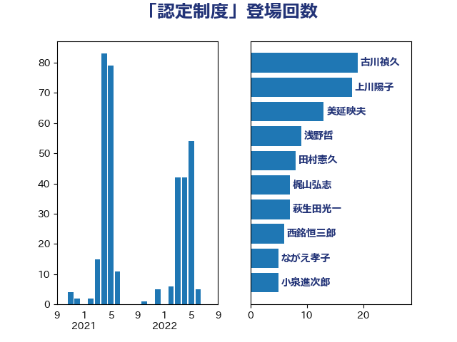

単語「認定制度」

| 古川禎久 | 自由民主党 | 19 回 |
| 上川陽子 | 自由民主党 | 18 回 |
| 美延映夫 | 日本維新の会 | 13 回 |
| 浅野哲 | 国民民主党 | 9 回 |
| 田村憲久 | 自由民主党 | 8 回 |
| 梶山弘志 | 自由民主党 | 7 回 |
| 萩生田光一 | 自由民主党 | 7 回 |
| 西銘恒三郎 | 自由民主党 | 6 回 |
| ながえ孝子 | 無所属 | 5 回 |
| 小泉進次郎 | 自由民主党 | 5 回 |
| 川田龍平 | 立憲民主党 | 5 回 |
| 赤羽一嘉 | 公明党 | 5 回 |
| 石井章 | 日本維新の会 | 4 回 |
| 笹川博義 | 自由民主党 | 4 回 |
| たがや亮 | れいわ新選組 | 3 回 |
| 井上英孝 | 日本維新の会 | 3 回 |
| 加藤鮎子 | 自由民主党 | 3 回 |
| 古賀篤 | 自由民主党 | 3 回 |
| 吉川ゆうみ | 自由民主党 | 3 回 |
| 大口善徳 | 公明党 | 3 回 |
| 山田勝彦 | 立憲民主党 | 3 回 |
| 新妻秀規 | 公明党 | 3 回 |
| 石井苗子 | 日本維新の会 | 3 回 |
| 井原巧 | 自由民主党 | 2 回 |
| 岩渕友 | 日本共産党 | 2 回 |
| 平口洋 | 自由民主党 | 2 回 |
| 徳永エリ | 立憲民主党 | 2 回 |
| 斉藤鉄夫 | 公明党 | 2 回 |
| 東徹 | 日本維新の会 | 2 回 |
| 森本真治 | 立憲民主党 | 2 回 |
| 深澤陽一 | 自由民主党 | 2 回 |
| 清水真人 | 自由民主党 | 2 回 |
| 玉木雄一郎 | 国民民主党 | 2 回 |
| 田島麻衣子 | 立憲民主党 | 2 回 |
| 田村まみ | 国民民主党 | 2 回 |
| 稲津久 | 公明党 | 2 回 |
| 野上浩太郎 | 自由民主党 | 2 回 |
| 上月良祐 | 自由民主党 | 1 回 |
| 下野六太 | 公明党 | 1 回 |
| 中山展宏 | 自由民主党 | 1 回 |
| 中根一幸 | 自由民主党 | 1 回 |
| 井坂信彦 | 立憲民主党 | 1 回 |
| 住吉寛紀 | 日本維新の会 | 1 回 |
| 吉川元 | 立憲民主党 | 1 回 |
| 吉田宣弘 | 公明党 | 1 回 |
| 嘉田由紀子 | 無所属 | 1 回 |
| 山口那津男 | 公明党 | 1 回 |
| 山崎誠 | 立憲民主党 | 1 回 |
| 山添拓 | 日本共産党 | 1 回 |
| 岸田文雄 | 自由民主党 | 1 回 |
| 川合孝典 | 国民民主党 | 1 回 |
| 後藤茂之 | 自由民主党 | 1 回 |
| 木村英子 | れいわ新選組 | 1 回 |
| 梅村みずほ | 日本維新の会 | 1 回 |
| 橋本岳 | 自由民主党 | 1 回 |
| 河野義博 | 公明党 | 1 回 |
| 渡辺猛之 | 自由民主党 | 1 回 |
| 田所嘉徳 | 自由民主党 | 1 回 |
| 石井正弘 | 自由民主党 | 1 回 |
| 石川大我 | 立憲民主党 | 1 回 |
| 礒崎哲史 | 国民民主党 | 1 回 |
| 竹谷とし子 | 公明党 | 1 回 |
| 若宮健嗣 | 自由民主党 | 1 回 |
| 落合貴之 | 立憲民主党 | 1 回 |
| 西村智奈美 | 立憲民主党 | 1 回 |
| 長友慎治 | 国民民主党 | 1 回 |
| 長浜博行 | 無所属 | 1 回 |
| 阿部知子 | 立憲民主党 | 1 回 |
| 青木一彦 | 自由民主党 | 1 回 |
| 青木愛 | 立憲民主党 | 1 回 |
| 須藤元気 | 無所属 | 1 回 |
| 高橋千鶴子 | 日本共産党 | 1 回 |
| 高野光二郎 | 自由民主党 | 1 回 |
| 高鳥修一 | 自由民主党 | 1 回 |